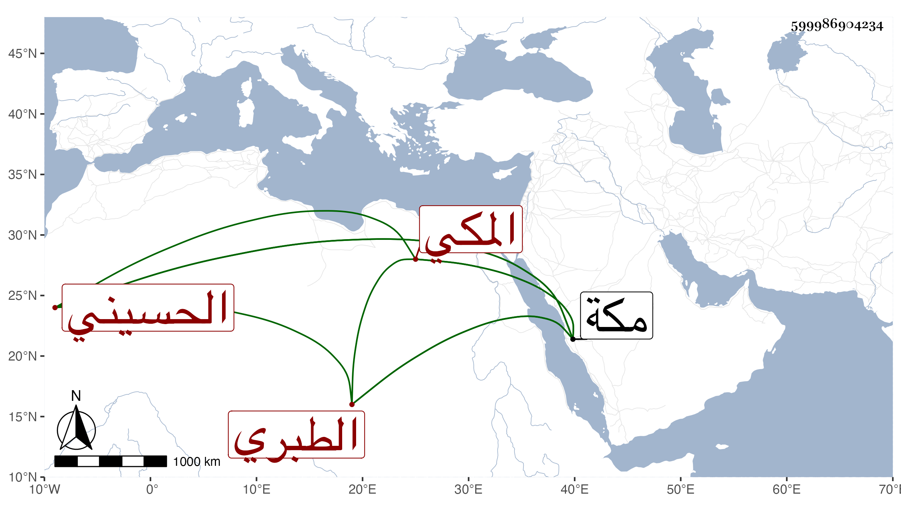

0902Sakhawi.DawLamic.ITO20230111-ara1.EIS1600.599986904234
Biography ID: 599986904234
282
زينب ابنة الرضى أبي السعادات محمد بن المحب محمد الشهاب أحمد بن الرضى إبراهيم بن محمد بن إبراهيم بن أبي بكر أم السعد الحسيني الطبري المكي أخت المحب محمد الماضي أمها عائشة ابنة أحمد بن حسن بن الزين القسطلاني . ولدت سنة أربع وتسعين وسبعمائة بمكة وأجاز لها التنوخي والبلقيني وابن الملقن والعراقي والهيثمي وطائفة ، أجازت لنا . وماتت في صفر سنة اثنتين وستين بمكة رحمها الله .
